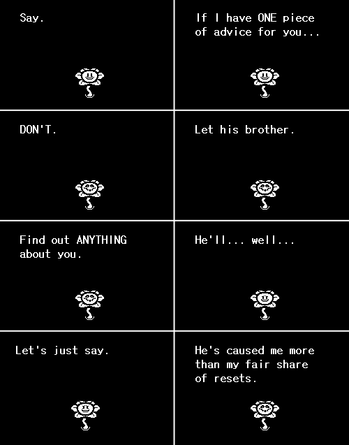
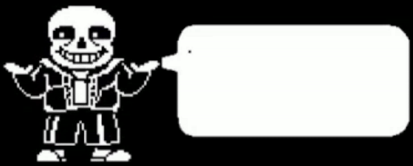

Sans
Undertale (video game)

|
* i'm sans.
* sans the skeleton.
|
Who IS this character?
* SANS 1 ATK 1 DEF
* The easiest enemy.
* Can only deal 1 damage.
|
|
Sans is a major character from the game Undertale. He is a relatively short skeleton that is always seen with a smile on his face. He wears a blue jacket with a white shirt underneath. He wears black shorts with white stripes, and is also seen wearing slippers that change color throughout different parts of the game and different sources. He resides in the town of Snowdin in the Underground with his brother, Papyrus. He is named as such because his in-game text boxes are written in the font Comic Sans (the same goes for Papyrus, his text being written in the font Papyrus). His powers are teleportation, telekinesis, the ability to manifest bones and bone creatures that can shoot energy beams out of thin air, and the ability to remember what you've done in your previous game save files or from his perspective, other timelines. He is the final boss of the game's "Genocide Route," popular for how hard and sometimes unfair the fight is.
|
Role in the Story
Before the events of Undertale, Sans and his brother Papyrus moved into the town of Snowdin within the Underground. A flower named Flowey then gains the ability to SAVE, LOAD, and RESET like the player of the game can. Unfortunately, being a reincarnated dead goat prince as a product of a scientist's experiment, he is unable to feel any emotion and goes through every single possible choice he can to gain at least any speck of emotion by LOADing. These choices unfortunately include killing everyone in the Underground. To other characters who aren't Flowey or the player who are able to remember between LOADs and RESETs, LOADing doesn't completely reset everyone's memories to a specific moment, it's more like having deja vu of what happens in other timelines. Throughout Flowey's resets, Sans begins to remember more and more each RESET and thus, tries to put an end to it, beating Flowey multiple times. Unfortunately, the timeline all just gets RESET in the end by Flowey, making his work all for nothing, putting him into depression. His encounters with Flowey are presumably how he learns how to read how much LV (short for LOVE or Level of Violence) and EXP (short for Execution Points, both of which you get for killing monsters) you have gotten throughout the game. After Flowey decides to stop RESETting and letting time move forward, Sans befriends the goat queen Toriel, of which they are separated by the walls of the Ruins.

After a while, the story that happens in Undertale starts. The player character, who you are able to name but is canonically named Frisk, meets Sans and Papyrus. If you choose to go through the True Pacifist Route where you don't kill anyone, Sans reveals that if he didn't make a promise to Toriel to help humans survive in the Underground, he would have already killed Frisk. Later on in the story, Sans and all of the other characters of Undertale are lured by Flowey, where all of their souls are sucked to let Flowey transform into his true form, Asriel Dreemurr, who is basically the goat prince I mention earlier but now with cool rainbow wings because he's the God of Hyperdeath apparently. Frisk saves everyone and Asriel who Frisk turns good, breaks the barrier, allowing the monsters to leave the Underground and live on the surface, where Sans is seen riding on his kiddie trike and Papyrus is seen riding on his red car on a highway.

If you choose to go through the Genocide Route where you kill everyone, when you meet him, Sans requests that the player at least pretend to be human, because the player has figuratively turned into a monster. Before you fight Papyrus at the end of Snowdin, Sans states that "if you keep going the way you are now... you're gonna have a bad time." If you kill Papyrus, you don't meet him until the judgement hall, where he judges you for your actions. You don't have a choice but to fight Sans to progress. He messes with the game itself while fighting you, being able to attack you while you're navigating the menu. He uses telekinesis in order to pull you towards the bones he summons to hurt you. Meanwhile, if you try to attack him, he simply teleports away to dodge. Eventually, he becomes tired and falls asleep. This is where the player gets the chance to attack twice. Sans dodges the first but gets hit by the second, walks away, and turns to dust.
Personality
Sans is lazy as a product of his belief in fatalism and apathy, his indifference coming from the fact that he is aware of SAVEs and RESETs and he knows he can't do anything to stop them. However, he acknowledges this, saying that it's "a poor excuse for being lazy."

Sans also enjoys being mischievious to the people who he perceives is on good terms with him. He likes to sometimes annoy people with bad puns but also enjoys in general which we can see from the fact that he performs at the MTT Resort as a comedian. He also likes making pranks which range from being juvenile to illogical to at least a little bit inconvenient. He uses a whoopie cushion on you the first time you meet him, tries to sell you "fried snow" for 50000G (very expensive for what is essentially water), and puts paint on a telescope to cover the lens. He also sometimes uses his powers to pull pranks such as teleporting you onto a treadmill while in a dark room so you can't see that he has in fact teleported you onto a treadmill. This is supported by Papyrus saying "WHY WERE YOU USING A TREADMILL IN THE DARK? IS SANS PRANKING YOU ACROSS TIME AND SPACE? I HATE IT WHEN HE DOES THAT!"

Sans, despite being apathetic to his own life, is very considerate to everyone he cares for. For example, despite apparently telling Big Mouth, a character that is seen inside the restaurant known as Grillby's, about all kinds of incredible food, Sans always orders the worst burger off the menu. He hates making promises, yet honors his promise to Toriel to look out for any humans in the Underground. Sans avoids the topic until the Last Corridor even if the player has killed people who are close to him.
Why do people like Sans?
People like Sans because of his incredible depth as a character. On the surface, he acts like he's lazy and tries to make everyone smile with his puns and the giant smile that is always plastered on his face but his personality goes really deep. He owns items that hint to a backstory that never gets explained, he actually runs about 4 part-time jobs despite acting lazy, and is always aware of what you do because he follows you. Despite being one of the most lovable characters due to being the stereotypical comic-relief character that acts lazy, he is the hardest boss that you only get to fight if you kill everyone, with a boss theme that has been used so much by the fans that they ironically started calling it a genre. Lastly, people like his depressed side. Fans for some reason really like to draw his emotional side in animations of the Genocide route, often when he loses his brother. People seem to like well-defined characters with funny personalities and emotional trauma for some reason.
A random fact, Sans has garnered so many fans that he won the Tumblr Sexyman award of 2022 from a competition where random fictional characters are put in a tournament-style bracket and the winner of each round is decided by a poll where whoever gets more votes goes to the next round. In the end, it doesn't really come down to how the sexy the character is, it's more of a popularity contest. Sans made it to the final round against Reigen from Mob Psycho 100 and won by only a couple votes. What's funny is that the creator of Sans himself, Toby Fox, made a short story on how Sans won by 1 vote, leaving Reigen utterly confused.